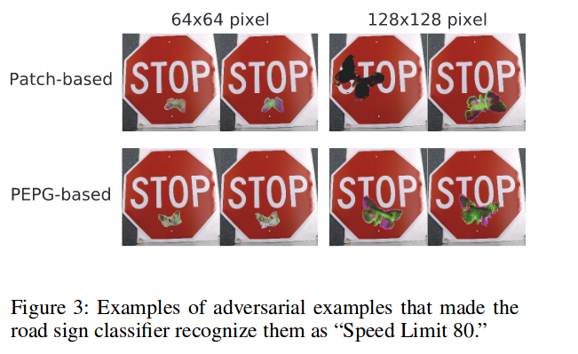

Machine Learning and Neural Networks
Roberto Santana and Unai Garciarena
Department of Computer Science and Artificial Intelligence
University of the Basque Country
Deep Neural Networks: Table of Contents
Adversarial examples
Adversarial examples as traffic signs
Characteristics
- Inputs that are specifically designed to cause the target model to produce erroneous outputs.
- They are one of the weaknesses of ML models since many families of machine learning models are vulnerable to them.
- There is a variety of adversarial attack methods as well as adversarial defenses.
R. Reza-Wiyatno, A. Xu, O. Dia, A. de Berke. Adversarial Examples in Modern Machine Learning: A Review. arXiv preprint arXiv:1911.05268. 2019.
H. Yakura, Y. Akimoto, and J. Sakum. Generate (non-software) Bugs to Fool Classifiers. arXiv preprint arXiv:1911.08644. 2019.
Adversarial examples
Adversarial examples as traffic signs
Impact
- Autonomous vehicles can be crashed.
- Illegal content can bypass content filters.
- Illicit or illegal content canbypass content filters.
- Biometric authentication systems can be manipulated to allow improper access.
N. Papernot, P. McDaniel, X. Wu, S. Jha and A. Swami. Distillation as a Defense to Adversarial Perturbations Against Deep Neural Networks. Proceedings of the 2016 IEEE Symposium on Security and Privacy. Pp. 582-597. 2016.
H. Yakura, Y. Akimoto, and J. Sakum. Generate (non-software) Bugs to Fool Classifiers. arXiv preprint arXiv:1911.08644. 2019.
Adversarial examples

A. Karpathy. Breaking Linear Classifiers on ImageNet. Hacker's guide to Neural Networks. 2015.
Adversarial examples
- Given a classifier \( f({\bf{x}}) \; \; : \; \; {\bf{x}} \in \mathcal{X} \rightarrow y \in \mathcal{Y} \; \) and original inputs \( {\bf{x}} \in \mathcal{X} \).
- The problem of generating untargeted adversarial examples can be expressed as the optimization:
\[ argmin_{ {\bf{x}}^{*}} L({\bf{x}},{\bf{x}}^{*}), s.t. f({\bf{x}}) \neq f({\bf{x}}^{*}) \]
where \(L(\cdot)\) is a distance metric between examples from the input space.
S. Baluja and I. Fisher. Adversarial Transformation Networks: Learning to Generate Adversarial Examples. arXiv preprint arXiv:1703.09387. 2017.
Adversarial examples
- Similarly, generating a targeted adversarial attack on a classifier can be expressed as:
\[ argmin_{ {\bf{x}}^{*}} L({\bf{x}},{\bf{x}}^{*}), s.t. f({\bf{x}}^{*}) = y_t \]
where \( y_t \in \mathcal{Y} \) is some target label chosen by the attacker.
S. Baluja and I. Fisher. Adversarial Transformation Networks: Learning to Generate Adversarial Examples. arXiv preprint arXiv:1703.09387. 2017.
Adversarial examples
Characteristics
- It can be seen as a strategy for generating training data.
- It is also a method to investigate the weaknesses of classification models, not only DNNs.
- Methods to construct adversarial examples try to add small perturbations to the inputs to fool the network into producing incorrect outputs.
Adversarial examples
Characteristics
- In some scenarios it is possible to detect when an input is adversarial.
- Another research direction is to devise learning methods that make DNNs less vulnerable to adversarial perturbations.
- This is a current direction of active research.
Methods for creating adversarial examples
R. Reza-Wiyatno, A. Xu, O. Dia, A. de Berke. Adversarial Examples in Modern Machine Learning: A Review. arXiv preprint arXiv:1911.05268. 2019.
Adversarial examples
Methods for creating adversarial examples
- White Box Attacks: The attacker is assumed to have information about the target model such as the architecture, parameters, and training procedure.
- Blackbox attacks: Involve only access to the output of a target model, and not its internals.
Two main groups include Gradient Based Optimization and Constrained Optimization methods.
Include a variety of optimization methods such as Evolutionary Algorithms and other search-based heuristics.
R. Reza-Wiyatno, A. Xu, O. Dia, A. de Berke. Adversarial Examples in Modern Machine Learning: A Review. arXiv preprint arXiv:1911.05268. 2019.
Methods for creating adversarial examples
L-BFGS targeted attack
- The objective is to find a perceptually-minimal input perturbation \( \arg min_r ||r||_2 \) where \( r = x^{\prime}-x \), such that the targeted labeled is output.
- The Limited Memory Broyden-Fletcher-Goldfarb-Shanno (L-BFGS) algorithm is used to pose the problem as a box-constrained formulation.
- The optimization problem is to find \( x^{\prime} \) that minimizes:
\begin{equation} c ||r||_2 + \mathcal{L}(x^{\prime},t) \end{equation} - The above optimization process is iterated for increasingly large values of \(c\) until the models classifies as the targeted label.
where \(x^{\prime}, x \in [0,1]^n\), \( \mathcal{L}(x^{\prime},t) \) is the true loss function of the model, and \(t\) is the target misclassification label.
R. Reza-Wiyatno, A. Xu, O. Dia, A. de Berke. Adversarial Examples in Modern Machine Learning: A Review. arXiv preprint arXiv:1911.05268. 2019.
Methods for creating adversarial examples
Fast Gradient Sign Method (FGSM) attack
- Finds a perturbation such that the loss function of the target model will increase.
- As a result the classification confidence will decrease.
- Then, it will more likely that the model will assign the highest probability to another (incorrect) class.
- FGSM works by calculating the gradient of the loss function with respect to the input, and creating a small perturbation:
\begin{equation} x^{\prime} = x + \epsilon \cdot sign \left(\nabla_x \mathcal{L}(x, y) \right) \end{equation} - FGSM does not explicitly optimize for the adversary \(x^{\prime} \) to have a minimal perceptual differenc. Instead, it uses a small \( \epsilon \) to weakly bound the perturbation \( r \).
where \( \nabla_x \mathcal{L}(x, y) \) is the first derivative of the loss function with respect to the input x.
I. Goodfellow, J. Shlens, and C. Szegedy. Explaining and Harnessing Adversarial Examples. arXiv preprint arXiv:1412.6572. 2014.
Methods for creating adversarial examples
Fast Gradient Sign Method (FGSM) attack
I. Goodfellow, J. Shlens, and C. Szegedy. Explaining and Harnessing Adversarial Examples. arXiv preprint arXiv:1412.6572. 2014.
Fast Gradient Sign Method (FGSM) attack

I. Goodfellow, J. Shlens, and C. Szegedy. Explaining and Harnessing Adversarial Examples. arXiv preprint arXiv:1412.6572. 2014.
Methods for creating adversarial examples
Jacobian-based Saliency Map Attacks (JSMA)
- It was originally conceived for visualizing how deep neural networks make predictions.
- The saliency map rates each input feature (e.g., each pixel in an image) by its influence upon the network’s class prediction.
- JSMA exploits this information by perturbing a small set of input features to cause misclassification.
- This is in contrast to attacks like the FGSM that modify most, if not all, input features. As such, JSMA attacks tend to find sparse perturbations.
N. Papernot, P. McDaniel, S. Jha, M. Fredrikson, Z. B. Celik, and A. Swami. The Limitations of Deep Learning in Adversarial Settings. arXiv preprint arXiv:1511.07528. 2015.
Jacobian-based Saliency Map Attacks (JSMA)
Saliency map
Saliency Computation
- The adversary wants to misclassify a sample \(X\) such that it is assigned a target class \(t \neq label(X) \).
- To do so, the probability of target class \(t\) given by \(F\), \(F_t(X) \), must be increased while the probabilities \(F_ j(X)\) of all other classes \( j\neq t\) should decrease.
N. Papernot, P. McDaniel, S. Jha, M. Fredrikson, Z. B. Celik, and A. Swami. The Limitations of Deep Learning in Adversarial Settings. arXiv preprint arXiv:1511.07528. 2015.
Jacobian-based Saliency Map Attacks (JSMA)
Attack
Saliency Computation
- The adversary wants to misclassify a sample \(X\) such that it is assigned a target class \(t \neq label(X) \).
- To do so, the probability of target class \(t\) given by \(F\), \(F_t(X) \), must be increased while the probabilities \(F_ j(X)\) of all other classes \( j\neq t\) should decrease.
N. Papernot, P. McDaniel, S. Jha, M. Fredrikson, Z. B. Celik, and A. Swami. The Limitations of Deep Learning in Adversarial Settings. arXiv preprint arXiv:1511.07528. 2015.
Adversarial examples
- The patches are inserted in the STOP sign and fools the model. 
Methods for creating adversarial examples
- A GAN is used to generate patches of butterflies .
H. Yakura, Y. Akimoto, and J. Sakum. Generate (non-software) Bugs to Fool Classifiers. arXiv preprint arXiv:1911.08644. 2019.
Adversarial examples
Adversarial transformation networks
Using NNs to generate adversarial examples
- Adversarial transformation networks (ATNs): Use feed-forward neural networks in a self-supervised manner to generate adversarial examples against a target network.
- ATNs may be untargeted or targeted, and trained in a black-box or white-box manner.
- They can also be applied to a set of networks.
S. Baluja and I. Fisher. Adversarial Transformation Networks: Learning to Generate Adversarial Examples. arXiv preprint arXiv:1703.09387. 2017.
Adversarial examples
Adversarial transformation networks
Using NNs to generate adversarial examples
- The ATN can be trained to generate just the perturbation to \( {\bf{x}} \), or it can be trained to generate an adversarial autoencoding of \( {\bf{x}} \).
- Using ATNs for adversarial autoencoding is similar to using denoising or other regularization-enforced autoencoders.
- The difference is that an additional requirement is imposed on the AE to guarantee that decoded sample is an adversarial one \( r(f({\bf{x}}^{\prime})) = {\bf{y}}^{\prime} \).
S. Baluja and I. Fisher. Adversarial Transformation Networks: Learning to Generate Adversarial Examples. arXiv preprint arXiv:1703.09387. 2017.
Universal adversarial examples
- A single small image perturbation that fools a state-of-the-art deep neural network classifier on all natural images.
M. Dezfooli, S. Mohsen, A. Fawzi, O. Fawzi, and P. Frossard. Universal adversarial perturbations. Proceedings of the IEEE conference on computer vision and pattern recognition. Pp. 1765-1773. 2017.
Universal adversarial examples
- Single-class universal perturbations: Expected to fool the target model only for inputs of one particular class.
- Multiple-class universal perturbations: Expected to fool target model only for a particular subset of \(N\) classes, with \(1 < N < k\).
- Fully universal perturbations: Expected to fool a target model for every possible input, with a complete independence of the original class.
J. Vadillo and R. Santana. Universal Adversarial Examples in Speech Command Classification. arXiv preprint arXiv:1911.0000. 2019.
Adversarial examples
Applications in other domains
- Adversarial examples has been mainly created for images in computer vision problems.
- However recent research proposes their use for other domains (e.g., audio, graphs problems).
- Audio adversarial examples constructed from voice commands can be used to fool virtual assistants based on speech recognition.
- Speech-to-text systems and medical images can be also negatively affected by adversarial examples.
R. Reza-Wiyatno, A. Xu, O. Dia, A. de Berke. Adversarial Examples in Modern Machine Learning: A Review. arXiv preprint arXiv:1911.05268. 2019.
Adversarial examples in Speech Command Classification
- An audio waveform is transformed to fool the model while keeping the distortion below a given threshold.
- An end-to-end differentiable classification process is assumed from which all the information will be available.
- The gradients of the model’s output can be computed with respect to the input audio waveform and used to create the adversarial example.
J. Vadillo and R. Santana. Universal Adversarial Examples in Speech Command Classification. arXiv preprint arXiv:1911.0000. 2019.
Adversarial examples in Speech Command Classification
Adversarial defenses
R. Reza-Wiyatno, A. Xu, O. Dia, A. de Berke. Adversarial Examples in Modern Machine Learning: A Review. arXiv preprint arXiv:1911.05268. 2019.
Adversarial defenses
Examples
- Reconstruction of adversarial images: Add an auxiliary decoder that takes the logits as input and reconstructs the image. The detector takes the reconstruction and produces as output the probability of being an adversarial example.
- Kernel density estimates: Used to estimate the probability that the input belongs to the manifold of the true examples.
- Feature squeezing: Assumes that input features are often unnecessarily large, yielding a large attack surface. It compares the predictions between squeezed and unsqueezed inputs.
Detecting adversarial attacks
- Before passing to a classifier detect or predict whether the sample is adversarial.
- Some of the methods can be bypassed if the attacker is aware of the defense strategy.
- Sophisticated methods combine different strategies to enhance adversarial detection performance.
R. Reza-Wiyatno, A. Xu, O. Dia, A. de Berke. Adversarial Examples in Modern Machine Learning: A Review. arXiv preprint arXiv:1911.05268. 2019.
Adversarial defenses
Feature squeezing
- The dimensionality of input features is often unnecessarily large, yielding a large attack surface.
- Predictions between squeezed and unsqueezed inputs are compared.
- Examples of squeezed features: color bit-depth reduction and spatial smoothing.
W. Xu, D. Evans, and Y. Qi Feature squeezing: Detecting adversarial examples in deep neural networks. arXiv preprint arXiv:1704.01155. 2017.
Adversarial defenses
Examples
- Adversarial training: A model is retrained by injecting adversarial examples into training set at every training iteration.
- PixelDefend: A model is used to "purify" an input before passing it to the classifier.
- Guided denoiser: A denoiser is learned that removes adversarial noise from the adversarial example.
Increasing robustness
- Models that perform equally well with adversarial and normal inputs.
- Seek to make models less sensitive to irrelevant variations of the inputs.
- Some approaches that were initially thought to be robust has shown to be vulnerable to more sophisticated attacks.
Y. Song, T. Kim, S. Nowozin, S. Ermon, and N. Kushman. PixelDefend: Leveraging Generative Models to Understand and Defend against Adversarial Examples. arXiv preprint arXiv:1710.10766. 2017.
N. Papernot, P. McDaniel, X. Wu, S. Jha and A. Swami. Distillation as a Defense to Adversarial Perturbations Against Deep Neural Networks. Proceedings of the 2016 IEEE Symposium on Security and Privacy. Pp. 582-597. 2016.
Transferability
- Adversarial examples or perturbations generated to fool a particular model can be used to fool others.
- Different ways of transferability:
- Transferability between different models.
- Transferability between different machine learning techniques.
- Transferability between models that perform different tasks.
R. Reza-Wiyatno, A. Xu, O. Dia, A. de Berke. Adversarial Examples in Modern Machine Learning: A Review. arXiv preprint arXiv:1911.05268. 2019.